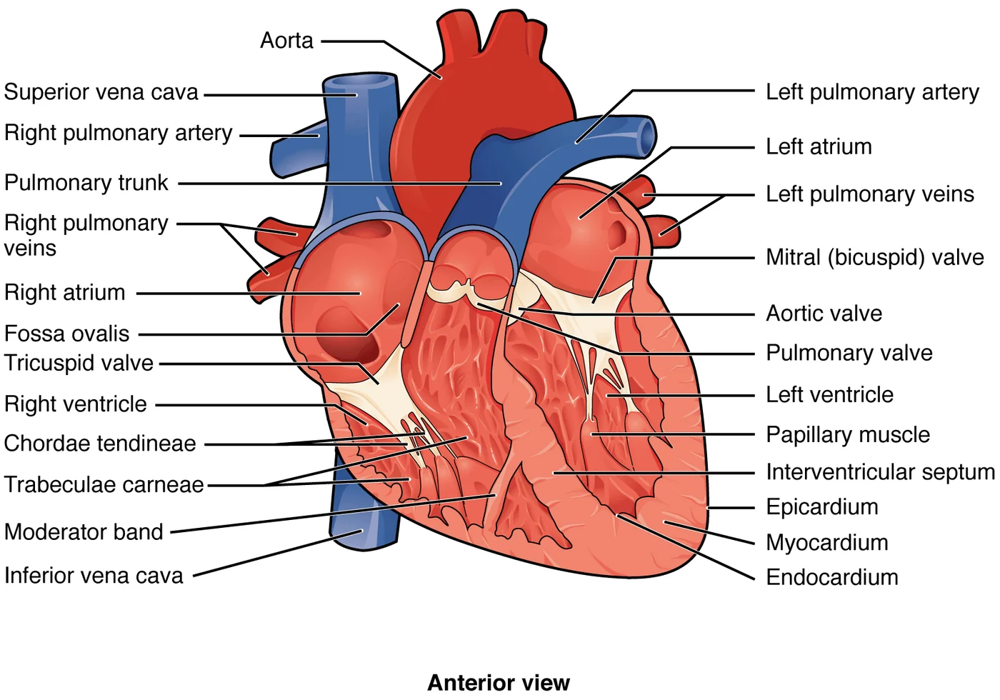
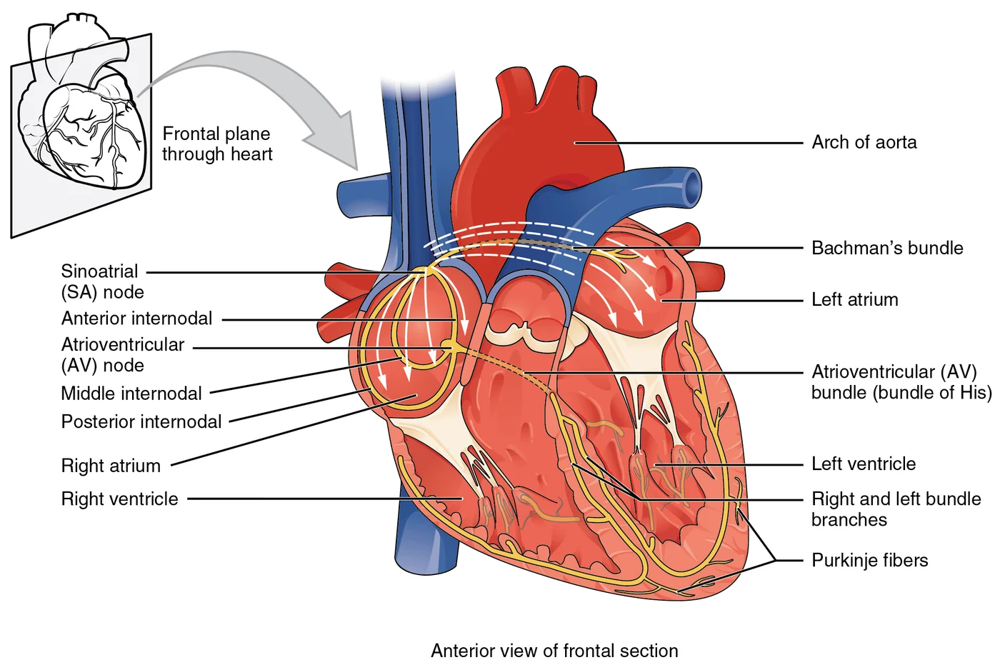

The Cardiovascular System
TEAS objective S.1.3 · Human Anatomy & Physiology
What the TEAS expects: you can trace blood through the heart and body, name the chambers and valves, tell arteries from veins correctly, describe how the heartbeat starts, and name the parts of blood.
1. Two pumps, two circuits
The heart is two pumps side by side.
- The right side pumps oxygen-poor blood to the lungs. This is the pulmonary circuit.
- The left side pumps oxygen-rich blood to the rest of the body. This is the systemic circuit.
Why the left ventricle is thicker: it has to push blood through the whole body, which takes much more pressure than the short trip to the lungs. More work means more muscle.
The heart's coverings and wall. The heart sits in the mediastinum inside a sac, the pericardium. The wall has three layers: the thin outer epicardium, the thick muscular myocardium that does the pumping, and the smooth inner endocardium that lines the chambers.
The heart feeds itself separately. Blood passing through the chambers cannot nourish the thick heart muscle. The coronary arteries, the first branches off the aorta, supply the myocardium. A blocked coronary artery starves part of the muscle of oxygen; if the blockage lasts, that muscle dies. That is a heart attack (myocardial infarction).
Check 1: Which ventricle has the thickest wall, and why? Answer at the bottom of the page.
2. The path of blood through the heart
Learn this as one continuous loop. Each atrium receives blood; each ventricle pumps it out. Each valve sits at an exit and stops backflow.
- Superior and inferior venae cavae bring oxygen-poor blood from the body
- → Right atrium
- → tricuspid valve → Right ventricle
- → pulmonary valve → Pulmonary trunk → pulmonary arteries → lungs (blood picks up O₂, drops CO₂)
- → Pulmonary veins bring oxygen-rich blood back
- → Left atrium
- → mitral (bicuspid) valve → Left ventricle
- → aortic valve → Aorta → body

Tap or click the figure to open it full size (in a new tab).

Tap or click the figure to open it full size (in a new tab).
Valve memory aid: "LAB RAT." Left Atrium → Bicuspid (mitral); Right Atrium → Tricuspid.
The atrioventricular (AV) valves (tricuspid, mitral) sit between atria and ventricles. The semilunar valves (pulmonary, aortic) sit where the ventricles empty into the big arteries.
Heart sounds come from valves closing. "Lub" (first sound) is the AV valves closing as the ventricles start to contract. "Dub" (second sound) is the semilunar valves closing as the ventricles relax.
Check 2: Blood has just passed through the mitral valve. Where is it now, and is it oxygen-rich or oxygen-poor? Answer at the bottom.
3. Arteries and veins are named for direction, not oxygen
This is the most common TEAS trap in this system.
- Arteries carry blood away from the heart.
- Veins carry blood toward the heart.
Usually arteries carry oxygen-rich blood and veins carry oxygen-poor blood. The pulmonary vessels are the main exception (the umbilical vessels before birth are another):
- Pulmonary arteries carry oxygen-poor blood away from the heart to the lungs.
- Pulmonary veins carry oxygen-rich blood from the lungs to the heart.
The direction rule never breaks; the oxygen rule does.
Vessel types in order: arteries → arterioles → capillaries → venules → veins. Capillary walls are one cell thick, which is why capillaries are the main site where gases, nutrients and wastes are exchanged with tissues.
Swipe the table sideways to see every column. →
| Arteries | Veins | |
|---|---|---|
| Direction | Away from heart | Toward heart |
| Pressure | High | Low |
| Wall | Thick, muscular, elastic | Thinner |
| Valves | No | Yes, many veins (especially in the limbs) have valves to stop backflow |
Blood pressure is written as two numbers, such as 120/80 mm Hg. The top number (systolic) is the pressure in the arteries while the ventricles contract; the bottom number (diastolic) is the pressure while they relax.
Check 3: Why do veins in the legs need valves but arteries don't? Answer at the bottom.
4. What makes the heart beat
Heart muscle starts its own beat. The electrical signal follows a fixed path:
- SA (sinoatrial) node in the right atrium fires first. It is the natural pacemaker.
- The signal spreads across both atria, which contract.
- AV (atrioventricular) node delays the signal briefly, so the atria finish emptying before the ventricles contract.
- Bundle of His (AV bundle) → bundle branches → Purkinje fibers carry the signal through the ventricle walls, and the ventricles contract from the bottom up.

Tap or click the figure to open it full size (in a new tab).
Two terms to know: systole = contraction; diastole = relaxation and filling.
Check 4: Why does the AV node delay the signal? Answer at the bottom.
5. What blood is made of
- Plasma (about 55% of blood): mostly water, carrying proteins, nutrients, hormones, wastes and dissolved gases.
- Formed elements (about 45%):
- Red blood cells (erythrocytes): carry oxygen on hemoglobin; no nucleus.
- White blood cells (leukocytes): fight infection.
- Platelets (thrombocytes): cell fragments that plug small breaks in vessel walls and help blood clot.
In adults, all three formed elements start in red bone marrow.
Common traps
- "Veins carry oxygen-poor blood." Not always. Use direction: veins go toward the heart.
- Mixing up tricuspid and mitral sides. Tricuspid is right; mitral is left.
- Thinking the atria pump blood to the lungs or body. Only the ventricles do that.
- Naming the AV node as the pacemaker. The SA node sets the rate.
Learn it properly
- Heart structure and blood flow: OpenStax Anatomy and Physiology 2e, Section 19.1 Heart Anatomy: OpenStax (opens in a new tab)
- How the beat starts: Section 19.2 Cardiac Muscle and Electrical Activity: OpenStax (opens in a new tab)
- Systole, diastole and heart sounds: Section 19.3 Cardiac Cycle: OpenStax (opens in a new tab)
- Arteries, veins and capillaries: Section 20.1 Structure and Function of Blood Vessels: OpenStax (opens in a new tab)
- Blood: Section 18.1 An Overview of Blood: OpenStax (opens in a new tab)
Check answers
- The left ventricle, because it pumps blood through the entire systemic circuit, which needs much higher pressure than the pulmonary circuit.
- In the left ventricle, and it is oxygen-rich (it just came from the lungs through the pulmonary veins and left atrium).
- Venous pressure is low, so in the legs gravity could pull blood backward. When leg muscles contract they squeeze the veins (the skeletal muscle pump), and the valves make sure that squeeze pushes blood only toward the heart. Arterial blood is driven by high pressure from the heart.
- So the atria can finish emptying into the ventricles before the ventricles contract.
ESCC TEAS Prep · Original study material written for Eastern Shore Community College. Figures and linked textbook: OpenStax, Anatomy and Physiology 2e, licensed CC BY 4.0, and an original diagram.